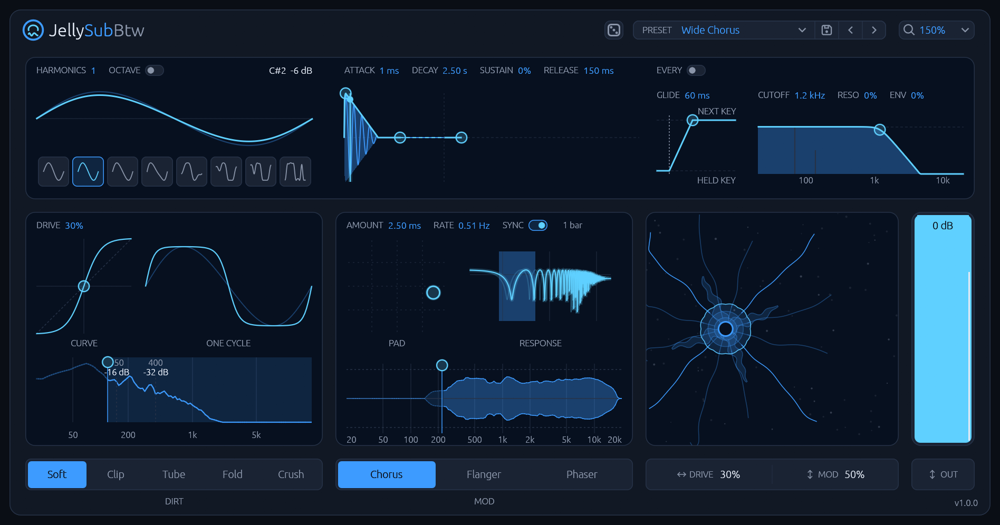

JellySubBtw plays one bass note at a time. A resonant low-pass shapes it, then one of five kinds of dirt drives it (Soft, Clip, Tube, Fold, Crush), on the whole bass or only above the sub, and DRIVE changes the tone without making it louder. After the dirt a chorus, a flanger or a phaser plays in a band of its own, from 200 Hz up by default, so the sub stays in the middle and mono-safe. The DIRT display reads how much of the note a laptop or phone speaker gets, so you can tell whether the bass will be heard on one. It has no latency. It is not a kick drum and not a sampler: it plays one bass voice from your notes.
Read the manual for every control and how to use it.
Screenshots


What it's for
Features
- One 808 voice: one note at a time, a hit starting on its note with no pitch drop and no click. GLIDE from 0 to 400 ms, bent early or late; OCTAVE keeps every key between B0 and A♯1.
- An ADSR drawn as it sounds: WAVE draws the chosen wave along the envelope, with grips to drag. SUSTAIN 0 rings out like an 808.
- Eight waves: a sine and seven waves with more and more harmonics.
- A resonant low-pass into the dirt: 24 dB an octave, RESO up to +17.7 dB at the cutoff, ENV opening it by up to 5 octaves with the note's envelope.
- Five kinds of dirt in a band of their own: Soft, Clip, Tube, Fold and Crush. DRIVE keeps the loudness within 0.2 LU from 0 to 100 %, so it changes the tone, not the level.
- Chorus, flanger or phaser above the sub: each with its own pad, RATE and DEPTH, and SYNC to lock the sweep to the song. With the band from 200 Hz the side stays 56 dB or more under the mid below 60 Hz.
- The laptop check: DIRT's spectrum marks 150 and 400 Hz and reads how much of the note a speaker that starts there gets.
- Presets: seven built in beside Init, your own, and a dice that rolls a new sound.
- No latency. Nothing passes 0 dBFS: a soft clip at full scale comes last.
- Light: 0.29 % of a CPU core at the defaults, 0.68 % with everything on, at 48 kHz.
- Zoom from 100 to 150 %.
- No network access and no telemetry.
Install
Download the latest version from the Releases page, or with these commands:
curl -LO https://github.com/jelly-comet/JellySubBtw-release/releases/download/v1.0.0/JellySubBtw-1.0.0-linux-x86_64.tar.gz
curl -LO https://github.com/jelly-comet/JellySubBtw-release/releases/download/v1.0.0/JellySubBtw-1.0.0-linux-x86_64.tar.gz.sha256
sha256sum -c JellySubBtw-1.0.0-linux-x86_64.tar.gz.sha256 && tar xzf JellySubBtw-1.0.0-linux-x86_64.tar.gz
cd JellySubBtw-1.0.0-linux-x86_64
Install for your user:
mkdir -p ~/.clap
rm -f ~/.clap/JellySubBtw.clap && cp JellySubBtw.clap ~/.clap/
Or for all users:
sudo mkdir -p /usr/lib/clap
sudo rm -f /usr/lib/clap/JellySubBtw.clap && sudo cp JellySubBtw.clap /usr/lib/clap/
Removing the old copy first avoids overwriting a file a running host has loaded. Then rescan plugins in your DAW.
To uninstall:
rm -f ~/.clap/JellySubBtw.clap
Your presets stay in ~/.local/share/JellySubBtw/presets/; delete that folder too if you want them gone.
FAQ
Is it free?
Yes. The download is free and MIT-licensed.
Is there a VST3 or LV2 version?
No. Releases contain the CLAP plugin only.
Does it run on ARM, like a Raspberry Pi or Apple Silicon?
No. It needs Linux on x86-64, on a CPU with AVX2.
Which hosts does it work in?
Any CLAP host. It was tried in Bitwig Studio and REAPER.
Does it work on Wayland?
Through XWayland. The editor also needs a Vulkan driver.
Does it make kick drums or play samples?
No. It plays one bass voice from your notes: a sine or a wave with more harmonics, with no pitch drop and no click at its start. Put it beside your kick, not in its place.
What's new in v1.0.0
20 Nov 2026 · Release on GitHub
JellySubBtw 1.0: an 808 bass instrument with five kinds of dirt, a chorus, flanger or phaser above the sub, and one jellyfish pad for both.
- One 808 voice: a sine or one of seven waves with more harmonics, under an ADSR drawn as it sounds, with grips to drag. A hit starts on its note, with no pitch drop and no click.
- Slides: a key under a held one glides over GLIDE (0 to 400 ms), bent early or late; with EVERY on, every note slides from the last. OCTAVE keeps every key between B0 and A♯1.
- A resonant low-pass into the dirt: 24 dB an octave, RESO up to +17.7 dB, ENV opening it with each hit.
- Five kinds of dirt: Soft, Clip, Tube, Fold and Crush, on the whole bass or only above the sub. DRIVE changes the tone, not the loudness (within 0.2 LU from 0 to 100 %).
- Chorus, flanger or phaser in a band of their own, from 200 Hz by default, so the sub stays in the middle; SYNC locks the sweep to the song.
- The laptop check: DIRT's spectrum reads how much of the note a laptop or phone speaker gets.
- Presets: seven built in beside Init, your own, and a dice that rolls a new sound.
- No latency. Nothing passes 0 dBFS. 0.29 % of a CPU core at the defaults, 0.68 % with everything on, at 48 kHz. Needs a CPU with AVX2.
License
MIT, see LICENSE. The licenses of the third-party code in the binaries are in
THIRD-PARTY-LICENSES.txt in each release archive.
VST is a registered trademark of Steinberg Media Technologies GmbH. CLAP is an open standard by the free-audio project. Ableton Live is a trademark of Ableton AG; the MOD pads follow Live 9's layout and nothing else. JellySubBtw is an independent project, not affiliated with or endorsed by Steinberg or Ableton, and "808" names a kind of bass, not a product.